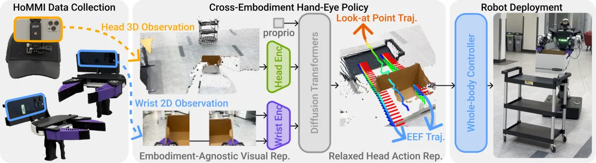
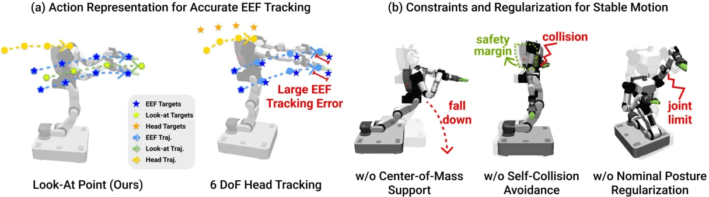
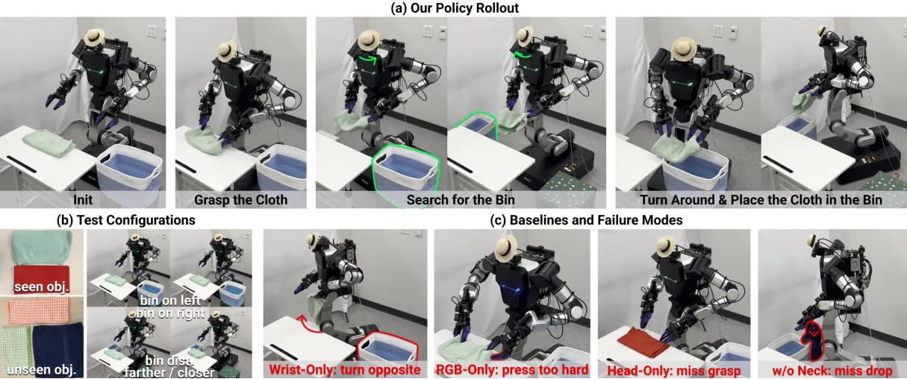
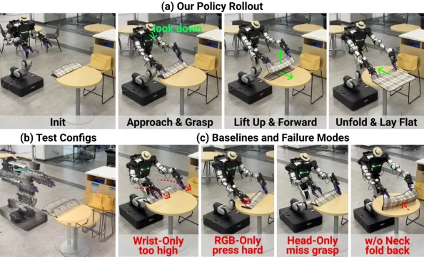

💡速记层 · 思想 / 逻辑 / 方法
默认读完就走的一层——只讲思想、逻辑、方法；效果只作验证。要核对原文或钻细节再看下面的「深读层」。
- 移动操作 = 导航 + 双臂操作 + 主动感知，腕部摄像头（UMI 原版）给不了全局视野，遥控机器人采数据又受限于场所与成本。
- 加头戴摄像头自然解决全局视野，但引入了新的本体差距（视觉：人臂与机器人臂外观不同；运动学：人脖子 6-DoF，机器人只有 2-DoF）。
- 视觉差距：用 3D 点云表示代替 RGB，把外观差异消除，并在夹爪坐标系下裁掉人臂点。
- 运动学差距：不回归 6-DoF 头部姿态，而是预测一个3D look-at 点，让全身控制器自行求解可行关节角。
- 以上三个设计共同让全身控制器（差分 IK + 约束）精确跟踪末端轨迹与头部视线，最终实现零机器人遥操数据的直接迁移。
在 RB-Y1（双臂全身移动机器人）上测三个长程任务，Ours 在所有任务均大幅领先所有 baseline；去掉任意一个设计（纯腕部/纯 RGB 头部/纯头部/无主动颈部）均显著掉点——消融反向证明了三个设计的必要性。
想看具体数字（点开）
- Laundry: Ours 90% vs. Wrist-Only 20% / RGB-Only 0% / Head-Only 0% / w/o Neck 75%
- Delivery: Ours 85% vs. Wrist-Only 15% / RGB-Only 45% / Head-Only 5% / w/o Neck 55%
- Tablescape: Ours 80% vs. Wrist-Only 0% / RGB-Only 0% / Head-Only 0% / w/o Neck 55%
- 深度噪声鲁棒性：噪声标准差 10mm 无性能损失，20mm 降至 50%
- 未见物体泛化：90.63%±12.10%；未见光照：93.75%±10.83%
- iPhone ARKit 姿态误差：位置 5.0mm / 旋转 0.8°
Track A（移动操作 VLA）直接命中且高度新颖：HoMMI 提供了一套完整的「人类示范 → 移动操作策略」pipeline，其跨本体手眼设计、look-at 点头部动作表示、以及全身控制器与策略的解耦架构，对任何移动操作学习框架都有直接参考价值。Track B（足式控制）不相关——本文聚焦轮式底盘的移动双臂平台，不涉及 locomotion。
特别值得注意：全开源（MIT），代码 + 数据 + 硬件设计均已发布，可直接复现或基于其构建。
◆核心观点 · 证据
每条 = 中文论点 + 📍页/节 + 🔤逐字原文(Ctrl-F 锚点) + 🀄译文 + 💡解读。

We augment UMI interfaces with egocentric sensing to capture the global context required for mobile manipulation, enabling portable, robot-free, and scalable data collection. However, naively incorporating egocentric sensing introduces a larger human-to-robot embodiment gap in both observation and action spaces, making policy transfer difficult.
the data collection system uses three iPhones: two mounted on the grippers and one mounted on a cap (Fig. 2 left). We leverage Apple's ARKit multi-device collaboration to establish a shared coordinate frame across phones. During each demonstration, we record RGB video, depth maps, 6-DoF poses, and gripper widths at 60 Hz on all three iPhones, producing synchronized multimodal trajectories

instead of directly feeding head RGB to the policy, we lift the egocentric observations into 3D and encode them with geometry-aware tokens, inspired by Adapt3R. Specifically, for each head camera frame, we first obtain a pointmap (from iPhone depth or stereo depth estimation on the robot), and patchify and downsample it via nearest neighbor interpolation s.t. each 16 × 16 patch corresponds to one 3D point.

Mobile robots have different kinematics than human demonstrators (e.g., shorter torso and fewer degrees of freedom in the neck). As a result, directly mimicking 6-DoF head poses from human data can easily produce infeasible motions. We instead control head motion via a 3D look-at point ℓt ∈ R3 (Fig. 4). This relaxed representation preserves active perception intent while respecting kinematic constraints
Our system allows transfer from human demonstrators with different body proportions. Demonstrations were collected from two operators with different heights (167 cm and 182 cm) and both transferred successfully. This supports that our 3D look-at point action representation mitigates the height difference among operators.
we implement a differential whole-body IK solver using Mink [45] with (i) high-weight bimanual SE(3) tracking terms to prioritize accuracy, (ii) temporal command interpolation combined with posture and velocity regularization to encourage smooth motions, (iii) explicit constraints and tasks such as torso upright orientation, center-of-mass (CoM) support, and self-collision avoidance, to ensure stability; and (iv) regularization toward a nominal "human" posture

Ours achieves a 90% success rate. It flexibly coordinates whole-body motion to navigate the workspace and place the cloth in the bin, robustly searches the environment to find the bin, and always turns correctly. Occasional failures result from not grasping the cloth firmly enough, causing it to slip halfway.
Ours achieves 85% success. The policy robustly performs visual servoing and long-horizon navigation, always approaching the correct direction towards the trolley. It also reactively adjusts the robot's approaching direction midway if the initial alignment is inaccurate.

Naively adding egocentric RGB can degrade performance under embodiment mismatch. Directly feeding the head RGB to the policy and regressing the head motion leads to brittle grasping and unstable motions, yielding a 0% success rate on two tasks, indicating a significant OOD shift due to viewpoint/appearance mismatch. Tracking 6-DoF head and hand trajectories together often leads to large tracking errors and violates the robot's kinematic constraints
Object variation yields 90.63%±12.10% success, and lighting variation yields 93.75%±10.83%, indicating robustness of our policy.
⎘开源状态 · 实时核查
⚠️ 以下状态基于 2026-06-02 实时抓取 GitHub 与项目页面，非仅论文自述。
- 代码
- 已开源 github.com/xxm19/hommi（MIT 许可证；含训练、部署、示范处理脚本；依赖 UMI 和 rby1-wbc 子模块）
- 数据
- 已开源 论文 Abstract 明确："All code, data, and hardware design are publicly available at https://github.com/xxm19/hommi"（GitHub README 亦确认）
- 硬件设计
- 部分 存于 Google Drive 外链（CAD 文件等），非直接托管于 GitHub，需独立访问
- 预训练权重
- 未公开 GitHub README 及项目页均未提及权重下载；需自行训练
- 许可证
- MIT 最宽松开源许可，商业使用无限制
这是论文正文明确承诺「code + data + hardware all public」并在论文发布同期上线的案例，不是"后续开源"。代码是真实可用的训练框架（基于 Diffusion Policy + DiT），数据包含三个评测任务的示范数据。但没有预训练权重，使用者需完整走数据采集 → 训练流程。
All code, data, and hardware design are publicly available at https://github.com/xxm19/hommi.
⚖批判 · 评级
首个实现从纯人类（非机器人）示范学习全身移动操作的完整系统，且在真实平台上达到 80-90% 成功率。三个设计决策（3D 视觉、look-at 动作、夹爪坐标系）每一个都有独立的消融证明，不是经验之谈。全开源（MIT）含数据，社区可直接复现扩展。对于任何希望避免昂贵移动机器人遥操数据采集的团队，这是当前最直接可用的参考。
① 评测规模有限：每个任务仅 20 rollout，3 个任务，单一机器人平台（RB-Y1），无跨平台验证。② 无预训练权重：数据采集需要专用硬件（3 部 iPhone + UMI 夹爪 + 头盔），入门门槛不低。③ 短观测窗口：仅用 2 帧历史，论文自承长时任务恢复能力有限。④ 无力觉/触觉：仅视觉，接触丰富任务（如插销、精密装配）尚未验证。⑤ 策略是纯 Diffusion Policy（非 VLA），未利用语言或大规模预训练，泛化边界尚不清晰。
评级：Important 方法论上的重要贡献（跨本体手眼设计完整成立），但不是 Breakthrough——任务规模和泛化范围仍较窄，await 更大规模验证。